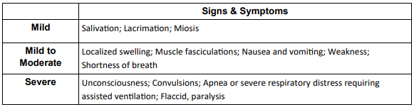

| History | Signs and Symptoms | Differential |
|---|---|---|
|
• Substance • Time of ingestion or exposure • Route of exposure • Quantity of medication or toxin taken • Alcohol or other intoxicant taken • Past medical history • Medications • Decontamination performed • Treatment prior to arrival |
DUMBELLS • Defecation / Diarrhea • Urination; increase, loss of control • Miosis (pupils constrict)/Muscle weakness/fasciculations • Bronchospasm, Bronchorrhea, Bradycardia (killer B’s) • Emesis • Lacrimation • Salivation/Sweating |
• Nerve agent exposure (e.g. VX, Sarin, Soman, etc.) • Organophosphate exposure (pesticide) • Vesicant exposure (e.g. Mustard Gas, etc.) • Respiratory irritant exposure (e.g. Hydrogen Sulfide, Ammonia, Chlorine, etc.) |
Estimated Level of Exposure

1. Assure scene is safe and the patient has been decontaminated if
needed.
2.
UNIVERSAL PATIENT CARE.
3. Save all bottles, containers or labels for information without
exposing rescuers.
4. Relay information to incoming ambulance or call for intercept per
INTERCEPT CRITERIA.
5. Contact Resource Hospital Medical Control for any
multiple victim response so that CHEMPACK activation may be
initiated.
6. If available, administer via
AUTOINJECTOR ATROPINE/PRALIDOXIME
(Ex. Duodote, Mark 1). Repeat every 3-5 minutes until symptoms of
SLUDGE subside, most importantly secretions
1. Continue EMR / EMT TREATMENT.
2. If symptomatic, administer
ATROPINE
2 mg IV or IM.
3. Repeat
ATROPINE
2-4 mg IV every 3-5 minutes until symptoms of SLUDGE
subside, most importantly secretions.
4. Establish IV access. Administer
Isotonic IV Fluid to maintain SBP ≥ 90 mmHg or MAP ≥
65 mmHg. Repeat fluid bolus as needed as long as lungs remain clear to
maintain SBP ≥ 90 mmHg; maximum 2 liters.
5. Apply cardiac monitor.
6. If seizures occur, refer to
SEIZURE / STATUS EPILEPTICUS
protocol.
PEARLS
• Continuous and ongoing patient reassessment is critical.
• Clinical response to treatment is demonstrated by the drying of
secretion and the easing of respiratory effort.
• Initiation of and ongoing treatment should not be based upon heart
rate or pupillary response.
• Atropine is the primary antidote for organophosphate, carbamate, or
nerve agent exposures, and repeated doses should be administered
liberally to patients who exhibit signs and symptoms of exposure or
toxicity.
• Clinical effects of acetylcholinesterase inhibitor agents
a. The clinical effects are caused by the inhibition of the enzyme
acetylcholinesterase which allows excess acetylcholine to accumulate
in the nervous system.
b. The excess accumulated acetylcholine causes hyperactivity in
muscles, glands, and nerves.
• Organophosphates (certain Insecticides)
a. Can be legally purchased by the general public.
b. Organophosphates (e.g. pesticides) penetrate tissues and bind to
the patient’s body fat producing a prolonged period of illness and
ongoing toxicity even during aggressive treatment.
• Nerve agents
a. Traditionally classified as weapons of mass destruction (WMD).
b. Not readily accessible to the general public.
c. Extremely toxic and rapidly fatal with any route of exposure.
d. GA (tabun), GB (sarin), GD (soman), GF, and VX are types of nerve
agents and are WMDs.
e. Nerve agents can persist in the environment and remain chemically
toxic for a prolonged period of time.
| KEY DOCUMENTATION ELEMENTS | PERTINENT ASSESSMENT FINDINGS |
|---|---|
|
• Time to recognize initial signs and symptoms • Number of repeated doses of atropine required for the secretions diminish and respirations to improve • Patient reassessments • Patient responses to therapeutic interventions • Measures taken to decontaminate the patient • Measures taken to protect clean environments from contamination |
• Signs and symptoms exhibited with the toxidromes of DUMBBELS |
| QUALITY METRICS |
| • Recognition and appropriate treatment of patients |